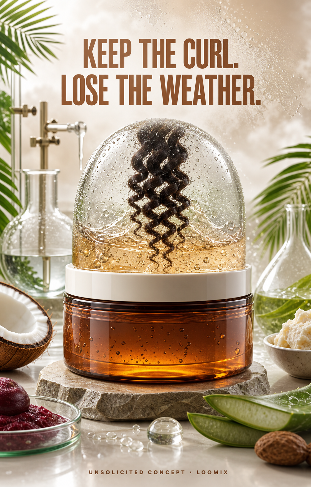

Concept created by LoomixUnsolicited concept
As I AmReels + TikTok9:168 seconds
Curling Jelly — Keep the Curl. Lose the Weather.
A defined curl sits inside a crystal-clear jelly climate dome. Tropical humidity swirls outside, while moisture stays locked around the curl to preserve soft, shiny, flexible definition and bounce.
Create with LoomixView official product
Hook options
“Keep the curl. Lose the weather.”
“Your curl climate, controlled.”
“Moisture in. Frizz out.”
8-second storyboard
Open on one defined curl in a clear laboratory.
Build a transparent jelly dome around it.
Release tropical humidity outside the boundary.
Lock moisture around the curl inside.
Reveal soft definition, shine, and flexible bounce.
End on the jar, climate dome, hook, and CTA.
Caption direction
A science-meets-tropics visual that makes moisture-locking definition easy to understand: the weather stays outside while the curl keeps its soft shape.
Made for rapid testing
Loomix turns one product image into a storyboard, short-video direction, captions, and ready-to-post ad copy.
This is an unsolicited creative concept made by Loomix for demonstration purposes. Loomix is not affiliated with or endorsed by As I Am.